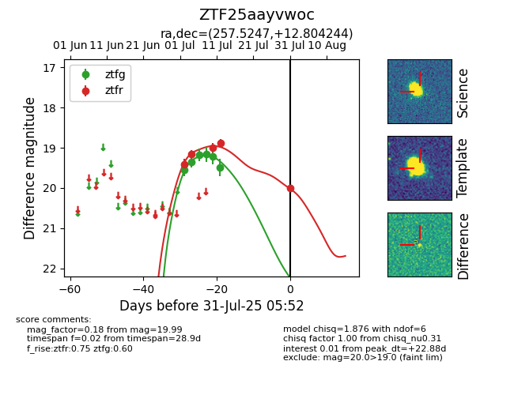

Target ZTF25aayvwoc at 2025-07-31 05:52, see:
FINK: fink-portal.org/ZTF25aayvwoc
Lasair: lasair-ztf.lsst.ac.uk/objects/ZTF25aayvwoc
ALeRCE: alerce.online/object/ZTF25aayvwoc
alt names
ZTF25aayvwoc (ztf,fink)
coordinates:
equatorial (ra, dec) = (257.5247,+12.80424)
galactic (l, b) = (33.3853,+28.19130)
photometry
last ztfg=19.50, ztfr=19.99
6 ztfg, 5 ztfr detections
